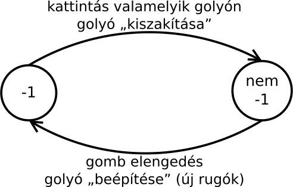

A játék futását alapvetően az idő vezérli, de a szimulációba be tudunk avatkozni
az egérrel. Az egérgombnak nem az állapotát, hanem annak változását kell érzékelnünk:
- Ha előzőleg nem volt lenyomva a gomb, de az aktuális pillanatban igen, akkor
egy kattintást érzékeltünk. Ilyenkor kell megkeresni az egérmutatóhoz közeli
golyót, mert azt szeretné a játékos megfogni (drag).
- Ha előzőleg le volt nyomva, de most nincs, akkor ez egy elengedés. Ilyenkor szeretné
a játékos letenni a golyót (drop).

Figyelni kell egyébként azért itt nem csak az állapotváltozásra, hanem az állapotra magára is.
Ugyanis ha kattintáskor a játékos megfogott egy golyót, akkor az egérgomb nyomvatartásakor
húzza azt. Ilyenkor a golyó koordinátáját folyamatosan módosítani kell az egérmutató koordinátája alapján.
Ezeket a műveleteket a programban az eseménykezelő ciklus vezérli.
Ez látja a golyók tömbjét (golyo, mérete golyok), a rugók
listáját, és a megfogott golyó indexét: megfogott.
Az utóbbi változhat, például kattintáskor a „nincs a kezünkben semmi” jelentésű
-1-es értéket leváltja egy golyo[] tömbbeli index:
case SDL_MOUSEBUTTONDOWN: /* egér kattintás */
mouse_x = ev.button.x;
mouse_y = ev.button.y;
for (i=0; i<golyok && megfogott==-1; ++i) {
double dx=golyo[i].x-mouse_x;
double dy=golyo[i].y-mouse_y;
if (dx*dx+dy*dy <= golyoelkap*golyoelkap) { /* ha elég közel volt az egérhez */
megfogott=i;
if (!golyo[i].fix) { /* ha nem fix, kiszakitjuk */
Rugo *iter=rugo.eleje->next;
while (iter!=rugo.vege) {
Rugo *iternext=iter->next;
if (iter->g1==i || iter->g2==i)
rugolista_torol(iter);
iter=iternext;
}
}
}
}
break;
Elengedéskor pedig az új rugók létrehozásán túl végül visszakerül a változóba
a -1:
case SDL_MOUSEBUTTONUP: /* egér elengedés */
mouse_x = ev.button.x;
mouse_y = ev.button.y;
for (i=0; i<golyok; ++i) {
if (i==megfogott) continue;
double dx=golyo[i].x-golyo[megfogott].x;
double dy=golyo[i].y-golyo[megfogott].y;
if (dx*dx+dy*dy <= rugoelkap*rugoelkap)
rugolista_hozzaad(&rugo, i, megfogott);
}
megfogott=-1;
break;
Az egérgomb nyomvatartásakor a golyó cipelése egyszerű, egyszerűen
kihagyjuk a mozgatásból:
for (i=0; i<golyok; i++) {
if (golyo[i].fix || i==megfogott) continue;
golyo[i].x+=golyo[i].vx * delta_t;
golyo[i].y+=golyo[i].vy * delta_t;
golyo[i].vx+=golyo[i].fx/golyo_m * delta_t;
golyo[i].vy+=golyo[i].fy/golyo_m * delta_t;
}
Végülis ennyi az egész. Minden más szinte ugyanúgy van, mint a tegnapi
programban. Még a súrlódás is. Valamilyen fékező erőnek kell lennie, amitől
a rezgések csillapodnak. Bár elvileg súrlódás a levegőben nincs, csak más
törvényszerűség szerint létrejövő közegellenállás, de a program az előbbivel
számol.